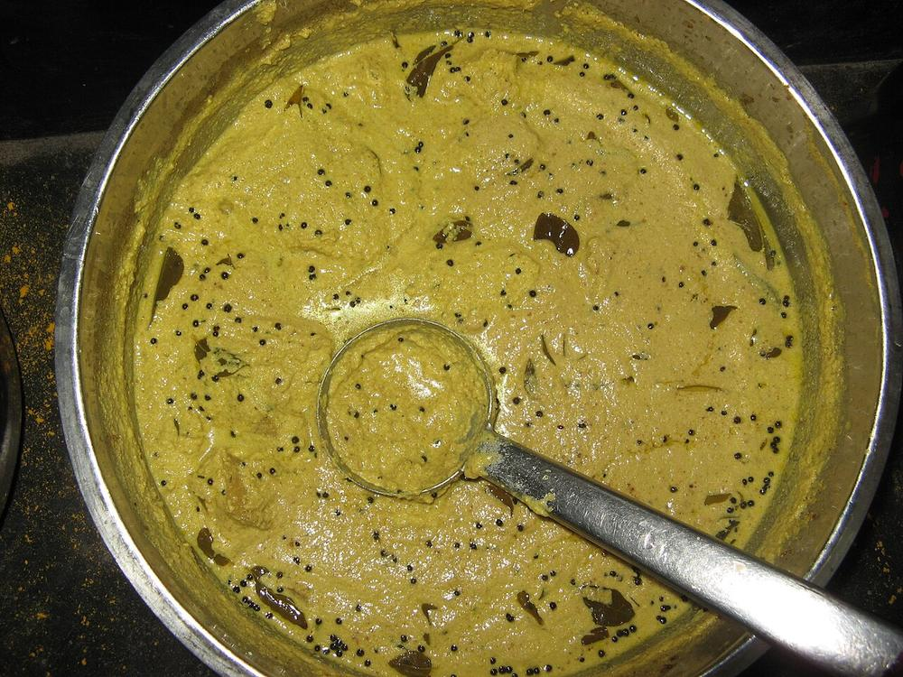

Contains: milk, mustard
Ingredients
Quantities for 6.
- 300g, peeled and cut into 2cm cubes Yamelephant foot yam
- 2 medium, peeled and cut into 2cm rounds Raw Banana
- 400g, thick and definitely sour Yogurtkaalan is meant to be tart. Use yogurt 2-3 days old
- 1 cup grated Coconut
- 3, slit Green Chilli
- 1/2 tsp Cumin Seeds
- 1 tsp Turmeric
- 1.5 tsp, freshly ground Black Pepperthe defining heat of this dish, not chilli
- 1/2 tsp Fenugreek Seedsdry-roasted and powdered for the finish
- 2 sprigs Curry Leaves
- 1 tsp Mustard Seeds
- 2, broken Dried Red Chilli
- 2 tbsp Coconut Oil
- 400ml Water
- 1.5 tsp, or to taste Salt
Cookware
stovetop, blender
Checked against the ingredient list for ten allergens: milk, egg, fish, crustaceans, tree nuts, peanuts, sesame, mustard, soy and gluten. Brands vary, so read the label on anything new to you.
Before you start
- Leave the yogurt out of the fridge for an hour. Cold yogurt splits the moment it hits the pan.
- Whisk the yogurt smooth in a separate bowl before you need it, not over the pan.
- Rub your palms with a little coconut oil before peeling the yam; it stops the itch.
- Dry-roast the fenugreek seeds until they smell toasty and grind to a powder; you need only a pinch of it at the end.
Method
- Boil the yam and raw banana with the turmeric, black pepper, green chillies, salt and 400ml water in an open pan for 15-18 minutes until the pieces are tender but still hold their shape on a spoon.Cook them uncovered so the water reduces. Kaalan should end up thick, not soupy.
- Meanwhile grind the coconut with the cumin seeds and 100ml water to a fine, smooth paste.
- Whisk the yogurt in a bowl until completely smooth and pourable.
- Stir the coconut paste into the simmering vegetables and cook 5 minutes, stirring, until the raw coconut smell has gone.
- Turn the heat to its lowest setting and pour in the whisked yogurt, stirring continuously in one direction.Low heat and constant stirring are the whole trick. If you stop stirring the yogurt curdles into grains.
- Cook 8-10 minutes on low, stirring often, until the curry thickens visibly and clings to the vegetables.Never let it come to a boil once the yogurt is in. Bubbles at the edge are fine; a rolling boil is not.
- Stir in a pinch of the roasted fenugreek powder and take the pan off the heat.
- Heat the coconut oil in a small pan, crackle the mustard seeds, add the dried chillies and curry leaves and let them crisp for 10 seconds.
- Pour the tempering over the kaalan, cover, and leave 10 minutes before serving with rice.
Storage
Keeps 4-5 days refrigerated. The high yogurt content is a preservative and traditionally kaalan was made to last. Reheat very gently or serve at room temperature; boiling will split it.
Nutrition Good estimate
Low protein: 5 g a serving, 7% of the calories
| Per serving282 g | Per 100 g | |
|---|---|---|
| Calories | 307 kcal | 109 kcal |
| Protein | 5.2 g | 2 g |
| Carbohydrate | 49.7 g | 18 g |
| of which sugars | 20.1 g | 7 g |
| Fibre | 5.4 g | 2 g |
| Fat | 11.8 g | 4 g |
| of which saturated | 9.2 g | 3 g |
| of which unsaturated | 1.5 g | 0 g |
Nearest database match used for curry leaves. Estimated from raw ingredients using USDA FoodData Central.
More like this: Vegetarian Indian recipes · Gluten-free Indian recipes · No onion no garlic recipes · Kerala recipes
Times, yields, allergens and nutrition are guidance. Use your own judgement on doneness and on storing. More in About.